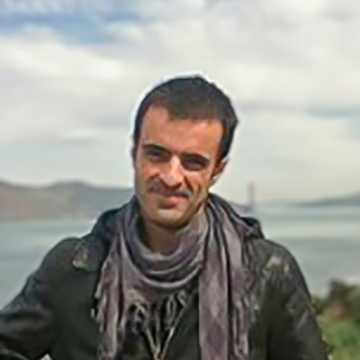
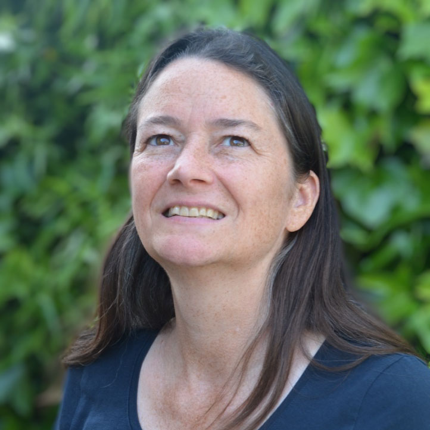
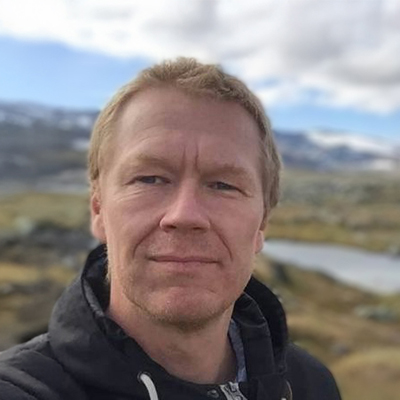

☰
WP1 – Data & Sampling
Collect and prepare data and samples, DNA extraction and sequencing
WP2 - Reference Database
Optimize and update DNA reference database, improve sequencing tools

WP3 - Machine Learning
Develop and train AI model for DNA analysis and taxonomy

WP4 - Databases & Standards
Harmonize data standards, FAIR data training
WP5 - Literature & Taxonomy
Link vegetation literature with taxonomic data, AI text analysis, API integration
WP5 - Literature & Taxonomy
Link vegetation literature with taxonomic data, AI text analysis, API integration
WP6 - Coordination & Outreach
Project management, communication, stakeholder engagement
Our External Advisory Board consists of experienced professionals who guide and support the strategic direction of MetaPlantCode:


